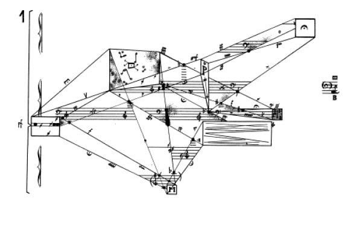

Grado
Música del Siglo XX
Coordinadora: Isabel Jiménez
- Análisis histórico: Presencia de mujeres en diferentes instrumentos
- Estudio de caso: Comparativa instrumentos masculinizados vs feminizados
- Intervención: Materiales sobre compositoras/intérpretes relevantes